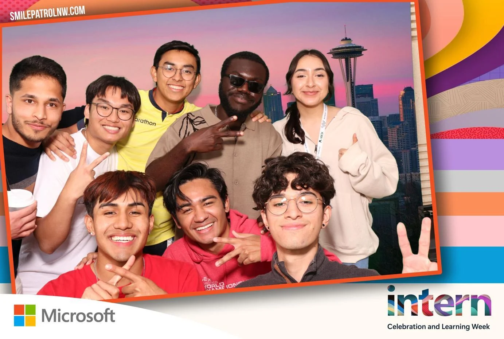
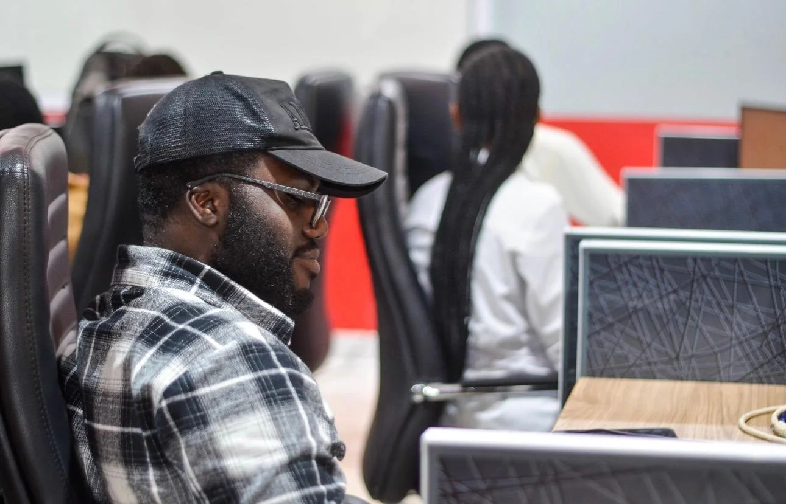
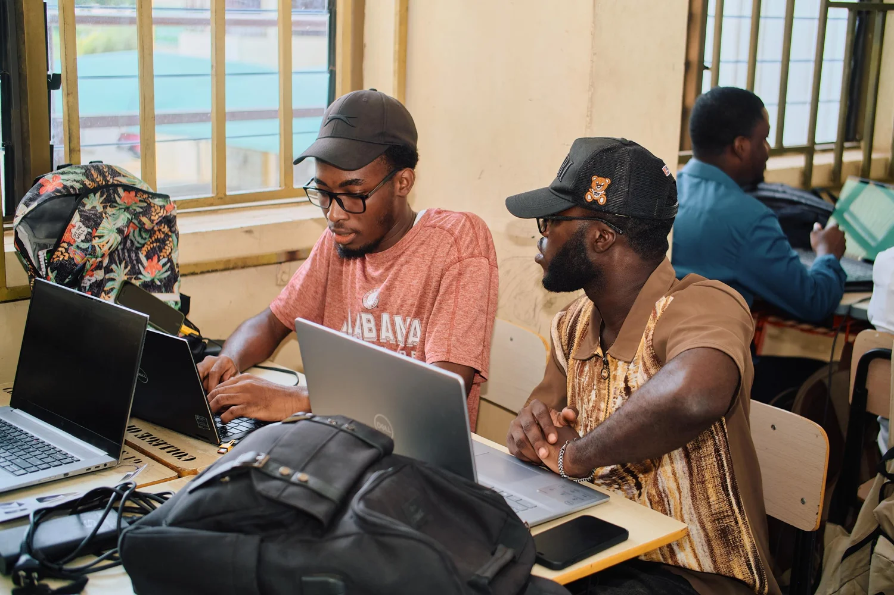
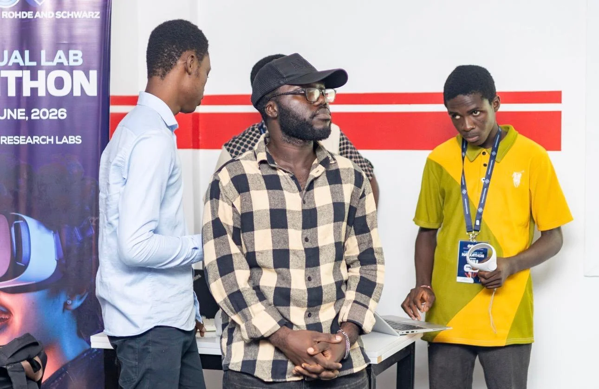
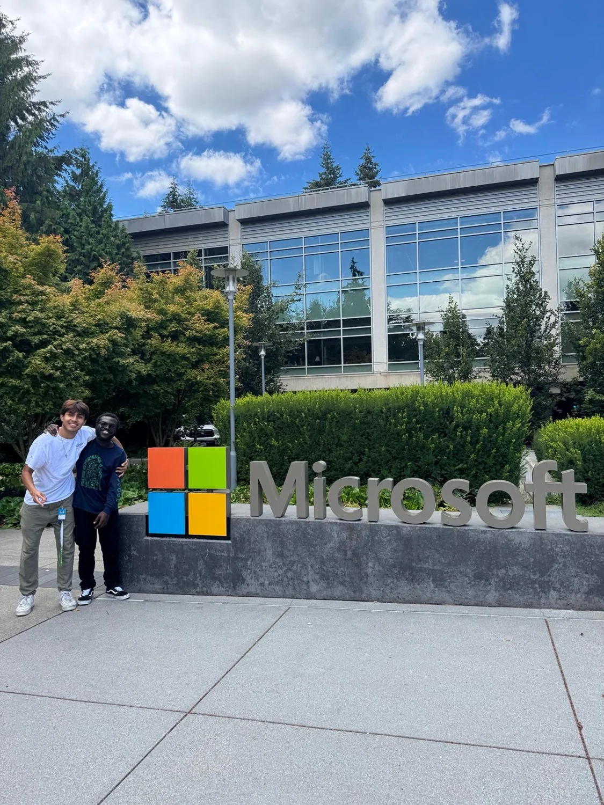
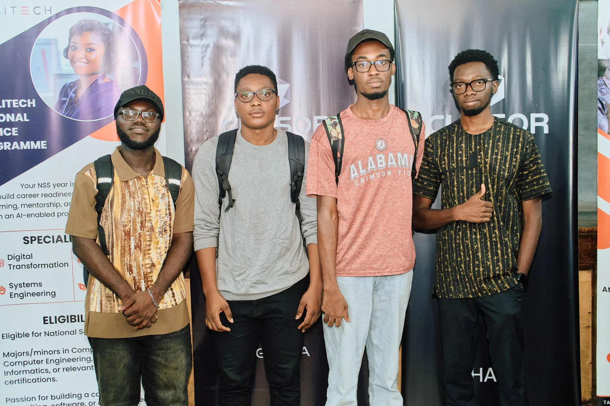
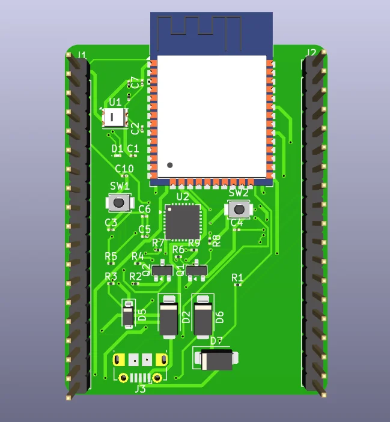

A little curiosity ✳ A lot of making ✳ A
little curiosity ✳ A lot of making ✳
01 / THINGS I’VE BUILT
Less “what if.” More “let’s try.”
Some things started in a hackathon. Others started with a circuit or
a question. Here’s what came out of them.
02 / LEARNING IN THE REAL WORLD
Out of the classroom. Into the work.
Two very different environments. Both teaching me how much there
is to learn by building with other people.

A SUMMER OF BUILDING TOGETHER
01 / MICROSOFTMAY – AUG 2024
A bigger picture of building software.
Explore Intern · Software Engineering & Program Management
Working with two fellow interns, I helped build activity and
history tracking for Xbox game publishers—connecting technical
decisions with the needs of the people using the product.
Built core functionality with React, TypeScript, and C#.
Co-authored technical and project management specifications.
Helped publishers track changes and receive system
notifications.
ReactTypeScriptC#

FROM SCHEMATIC TO CIRCUIT
02 / DIPPER LAB, KNUSTSEP 2026 – PRESENT
Closer to the circuit.
Hardware Intern
At Dipper Lab, I’m learning how an idea moves from a schematic
to a physical board, developing practical skills one component
at a time.
Schematic development and printed circuit board design.
Surface-mount soldering and microcontroller work.
Practical training with PCB software and printing equipment.
PCB designElectronicsMicrocontrollers
03 / NOTES ALONG THE WAY
The bits between the bullet points.
A few places I’ve been, people I’ve worked with, and ideas we
decided to give a chance.

HACKATHONMAR 2026
Making information speak your language.
Our two-person team built AgriVoice to help local farmers access
online information through voice interactions in local languages.
✳ Best use of Ghana NLP / Khaya AI APIs

HACKATHONJUN 2026
A laboratory beyond four walls.
At the Rohde & Schwarz Hackathon, our team of five prototyped a
virtual physics lab. I contributed to the backend structure.
↗ 7th runner-up out of 13 teams
2024A summer at Microsoft
Software, teamwork, and a wider perspective.
MAR 2026Finding a voice
AgriVoice at the Cursor Hackathon.
JUN 2026Opening up the lab
Virtual physics at Rohde & Schwarz.
SEP 2026Back to the workbench
Hands-on hardware at Dipper Lab.
THE CAMERA ROLL
Somewhere between the work & the memories.

01 / A new environment · 2024

02 / Ideas become teamwork · 2026

03 / On the workbench · 2026
SHOWING UP, BEYOND THE BUILD
Better together.
Helping others learn is part of how I learn, too.
TRATECH Committee
Incoming member · 2026/27+
Joining the Faculty of Electrical and Computer Engineering
committee that coordinates hackathons and activities to develop
students’ technical skills.
Media team volunteer
The Beautiful Church · Mar 2026–present+
I operate projection during services, edit photographs, and
assist with photography at The Beautiful Church in Ayeduase.
Academic group leader KNUST · 2025/26+
Led coursework groups in IT and Engineering Drawing, coordinated
assignments, and helped teammates work through unfamiliar
concepts.
ACES Robotics & Cursor Community
KNUST · 2026–present+
I joined ACES Robotics in February 2026 for practical Python and
robot-control learning, and the Cursor Community in March 2026.
04 / THE PERSON BEHIND THE PROJECTS
Otis.java a work in progress
public classOtis {
// Hi again. // A little more Otis.
boolean stillLearning =
true;
}
</>ALWAYS BUILDING
Java
PyPython
TSTypeScript
JSJavaScript
CC
C++C++
C#C#
SVSystemVerilog
</>HTML
{ }CSS
⚛React
FlFlutter
SQLPostgreSQL
⑂Git
GHGitHub
BbBitbucket
DkDokku
πRaspberry Pi
TCTinkerCAD
SWSolidWorks
PCBPCB design
SbStorybook
Not finished learning. Not even close.
I’m Otis, a Computer Engineering student at KNUST, based in
Kumasi, Ghana.
I’m interested in the places where software meets the physical
world—and in making technology useful and accessible to the people
around me. That curiosity takes me from web applications to
robotics, PCB design, and hackathon prototypes.
Outside project work, I help classmates learn, volunteer on a
church media team, and keep finding new things to figure out.
CURRENT CHAPTERBSc Computer EngineeringKNUST · Expected graduation May 2029CWA 88.00